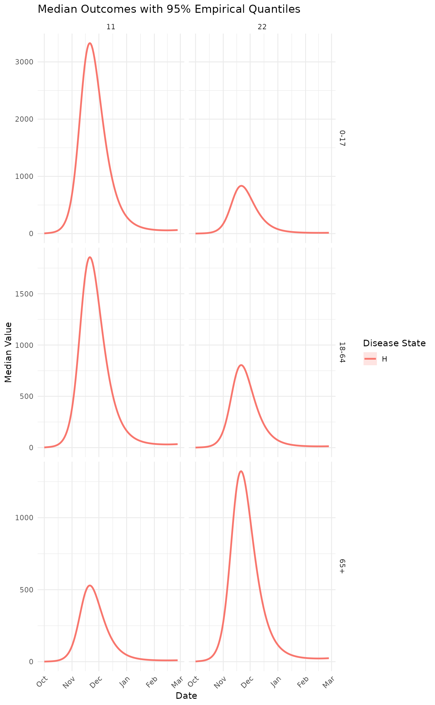

R6 class to handle MetaRVM simulation results with comprehensive analysis and visualization methods. This class stores formatted simulation results and provides methods for data summarization, subsetting, and visualization with flexible demographic groupings.
Details
The MetaRVMResults class automatically formats raw simulation output upon initialization, converting time steps to calendar dates and adding demographic attributes. It provides methods for flexible data summarization across any combination of age, race, and geographic zone categories, plus method chaining for streamlined analysis workflows.
Public fields
configMetaRVMConfig object used to generate these results
resultsdata.table containing formatted simulation results
run_infoList containing run metadata
Methods
Method new()
Initialize a new MetaRVMResults object
Usage
MetaRVMResults$new(
raw_results,
config,
run_info = NULL,
formatted_results = NULL
)Method subset_data()
Subset the data based on any combination of parameters
Usage
MetaRVMResults$subset_data(
ages = NULL,
races = NULL,
zones = NULL,
disease_states = NULL,
date_range = NULL,
instances = NULL,
exclude_p_columns = TRUE
)Arguments
agesVector of age categories to include (default: all)
racesVector of race categories to include (default: all)
zonesVector of zones to include (default: all)
disease_statesVector of disease states to include (default: all, excludes p_ columns)
date_rangeVector of two dates start_date, and end_date for filtering (default: all)
instancesVector of instance numbers to include (default: all)
exclude_p_columnsLogical, whether to exclude p_ columns (default: TRUE)
Method summarize()
Summarize results across specified demographic characteristics
Arguments
group_byVector of demographic variables to group by: c("age", "race", "zone")
disease_statesVector of disease states to include (default: all, excludes p_ columns)
date_rangeOptional date range for filtering
statsVector of statistics to calculate: c("mean", "median", "sd", "min", "max", "sum", "quantile"). If NULL, returns all instances
quantilesVector of quantiles to calculate if "quantile" is in stats (default: c(0.25, 0.75))
exclude_p_columnsLogical, whether to exclude p_ columns (default: TRUE)
Examples
# \donttest{
options(odin.verbose = FALSE)
example_config <- system.file("extdata", "example_config.yaml", package = "MetaRVM")
# Run simulation
results_obj <- metaRVM(example_config)
#> Loading required namespace: pkgbuild
# Access formatted results
head(results_obj$results)
#> date age race zone disease_state value instance
#> <Date> <char> <char> <char> <char> <num> <int>
#> 1: 2023-10-01 0-17 A 11 D 2.252583e-04 1
#> 2: 2023-10-01 0-17 A 11 E 1.305178e+01 1
#> 3: 2023-10-01 0-17 A 11 H 2.304447e-01 1
#> 4: 2023-10-01 0-17 A 11 I_all 2.731688e+01 1
#> 5: 2023-10-01 0-17 A 11 I_asymp 3.227854e-01 1
#> 6: 2023-10-01 0-17 A 11 I_eff 2.476245e+01 1
# Subset data with multiple filters
subset_data <- results_obj$subset_data(
age = c("18-49", "50-64"),
disease_state = c("H", "D"),
date_range = c(as.Date("2024-01-01"), as.Date("2024-02-01"))
)
#> 19723
#> 19754
# Method chaining for analysis and visualization
results_obj$subset_data(disease_state = "H")$summarize(
group_by = c("age", "race"),
stats = c("median", "quantile"),
quantiles = c(0.25, 0.75)
)$plot()
#> Warning: Using `size` aesthetic for lines was deprecated in ggplot2 3.4.0.
#> ℹ Please use `linewidth` instead.
#> ℹ The deprecated feature was likely used in the MetaRVM package.
#> Please report the issue at <https://github.com/RESUME-Epi/MetaRVM/issues>.

# }